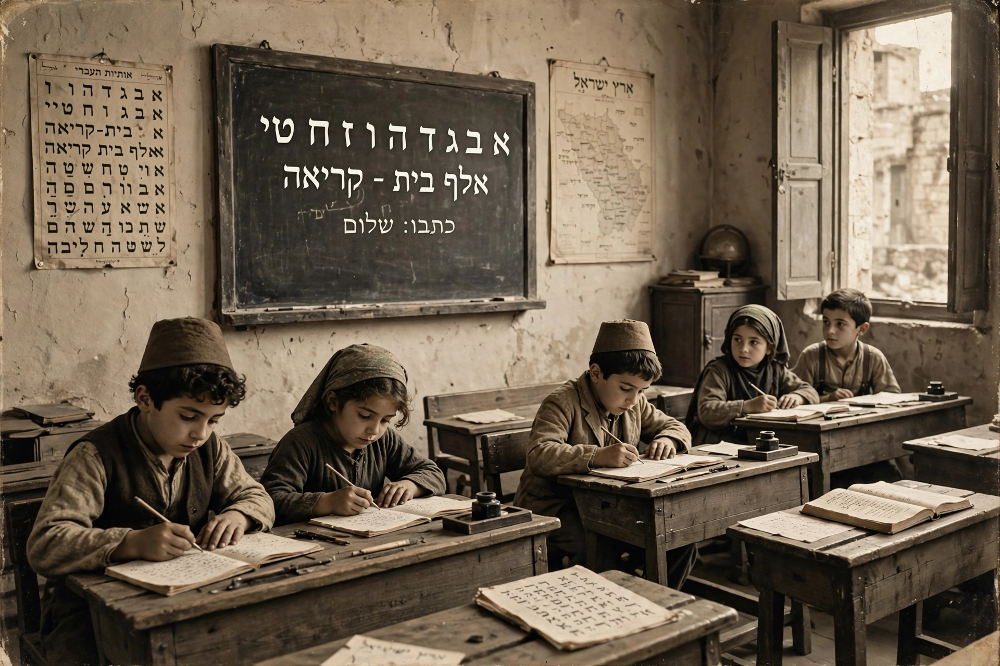

Revival of the Hebrew language

The revival of the Hebrew language took place in Europe and Palestine during the 19th and 20th centuries, through which the language's usage changed from purely the sacred language of Judaism to a spoken and written language used for daily life among Jews in Palestine and later in Israel. It is commonly considered the most successful language revival in history: Hebrew had ceased to be a native spoken language around the 2nd–4th centuries CE, yet survived as a liturgical and literary language for some 1,700 years before being re-vernacularised.
Background
From late antiquity, Jews spoke the vernaculars of their countries — Aramaic, Arabic, Yiddish, Ladino and others — while Hebrew remained the language of prayer, scripture, scholarship and inter-community correspondence. The Haskalah (Jewish Enlightenment) produced Hebrew literature and journalism in the 18th–19th centuries, and Zionism's national project created the motive for a common spoken tongue among immigrants from many countries.
Eliezer Ben-Yehuda
The figure most identified with the revival is Eliezer Ben-Yehuda (1858–1922), a Lithuanian-born lexicographer who settled in Jerusalem in 1881. He insisted on speaking only Hebrew in his household; his son Ben-Zion (later Itamar Ben-Avi) is often described as the first native speaker of Modern Hebrew. Ben-Yehuda founded Hebrew newspapers, co-founded the Hebrew Language Committee (forerunner of the Academy of the Hebrew Language), and compiled a monumental dictionary, coining thousands of new words for modern concepts from Hebrew roots.
The Yishuv and the language war
In the Jewish community of Ottoman and Mandate Palestine (the Yishuv), Hebrew spread through schools, kindergartens, the press, theatre and labour organisations. The "War of the Languages" (1913–14) erupted when a German-Jewish aid society planned to teach in German at the new Technion in Haifa; protests forced the adoption of Hebrew, confirming its status. By the 1930s Hebrew was the dominant language of the Yishuv, and in 1948 it became the official language of the State of Israel. Arabic-speaking and other immigrant communities were integrated through the ulpan intensive-course system.
Modern Hebrew
Modern Hebrew (Ivrit) has roughly nine million speakers and is the official language of Israel. Scholars debate how much it was shaped by revivalists' European mother tongues (especially Yiddish and Slavic languages) in phonology and syntax, alongside its Semitic core. The Academy of the Hebrew Language continues to coin terms. The revival has inspired other language-revitalisation movements worldwide, from Irish and Welsh to Hawaiian and te reo Māori.